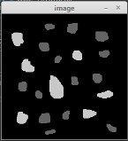

Professor: Agostinho Brito.
O exercício consiste em, dado dois valores P1 e P2, transformar uma imagem de forma que a região presente entre P1 e P2 contera o negativo da mesma e o resto se mantera. Para isso, P1 e P2 devem ser valores presentes no conjunto de pixels da imagem e o resultado da transformação se dara numa região com formato retangular.
Para finalizar, deve-se gerar uma imagem nova e exibi-la.
using namespace cv;
using namespace std;
int main(int, char**){
Mat image;
image= imread("imagem.png",CV_LOAD_IMAGE_GRAYSCALE);
if(!image.data){
cout << "Erro: Nao foi possivel carregar a imagem." << endl;
}
else{
namedWindow("Janela",WINDOW_AUTOSIZE);
int x1, x2, y1, y2;
cout << "Ponto 1" << endl;
cout << "X: ";
cin >> x1;
cout << "Y: ";
cin >> y1;
cout << "Ponto 2" << endl;
cout << "X: ";
cin >> x2;
cout << "Y: ";
cin >> y2;
// Negativar regiao entre os pontos 1 e 2
imshow("Janela", image);
return 0;
for(int i=x1;i
}
}
imwrite("imagemnegativa.png", image);
waitKey();
}
}

O exercício consiste em, dado uma imagem, dividí-la em quatro regioes e trocar as posições delas. Por exemplo, a região superior esquerda deve trocar de lugar com a inferior direita e a região superior direita deve ser trocada com a inferior esquerda.
A região superior esqueda (1) sera definida dos valores iniciais de x e y até a metade da altura e a metade da largura da imagem, respectivamente. A região superior direita (2) sera definida do ponto inicial até a metade da altura para os valores de x e da metade do comprimento até o final dele para os valores de y. A região inferior esquerda (3) sera definida da metade da altura até o final dela para os valores de x e do ponto inicial ate a metade do comprimento para os valores de y. Seguindo a mesma logica, a ultima região (4) sera composta pelo que sobrou.
Nota-se que apenas 3 resultados podem ser obtidos, tendo em vista que a região 1 pode trocar de lugar com qualquer uma das 3 outras, contudo as duas que restarem devem trocar de lugar entre si. Então, a troca pode ocorrer de tres formas: entre as regioes 1-2 e 3-4 (troca na horizontal), entre as regioes 1-3 e 2-4 (troca na vertical) ou entre as regioes 1-4 e 2-3. A logica dela consiste em armazenar os dados da primeira região numa variavel, depois modificar essa região com os dados da desejada e em seguida modificar os dados da desejada utilizando o que foi armazenado na variavel. Para finalizar, deve-se exibir na tela a nova imagem.
using namespace cv;
using namespace std;
int main(int, char**){
srand(time(NULL));
Mat image;
int width, height;
int t;// Troca (regioes)
int aux1, aux2; // Auxiliar
image= imread("imagem.png",CV_LOAD_IMAGE_GRAYSCALE);
if(!image.data){
cout << "Erro: Nao foi possivel carregar a imagem." << endl;
}
else{
namedWindow("Janela",WINDOW_AUTOSIZE);
width=image.size().width;
height=image.size().height;
// Translacao
imshow("Janela", image);
return 0;
t = rand() % 3; // Troca aleatoria
if(t==0){ // 1-2, 3-4
for(int i=0;i
image.at
image.at
aux2 = image.at
image.at
image.at
}
}
}
else if(t==1){ // 1-3, 2-4
for(int i=0;i
image.at
image.at
aux2 = image.at
image.at
image.at
}
}
}
else{ // 1-4, 2-3
for(int i=0;i
image.at
image.at
aux2 = image.at
image.at
image.at
}
}
}
// FimTranslacao
imwrite("Exemplo2.png", image);
waitKey();
}
}

Troca 1-3, 2-4
Troca 1-4, 2-3
O principal dele é que o algoritmo de rotulacao não consegue identificar mais de 255 objetos na imagem, porque ele trabalha com grayscale, que tem uma escala de tons de cinza que varia de 0 ate 255 e o algoritmo da diferentes rotulos. Logo, se ha mais de 255 objetos na imagem, nao existirão cores diferentes para completar a contagem.
using namespace cv;
int main(int argc, char** argv){
Mat image, mask;
int width, height;
int nobjects;
CvPoint p;
image = imread(argv[1],CV_LOAD_IMAGE_GRAYSCALE);
if(!image.data){
std::cout << "imagem nao carregou corretamente\n";
return(-1);
}
width=image.size().width;
height=image.size().height;
p.x=0;
p.y=0;
// busca objetos com buracos presentes
nobjects=0;
for(int i=0; i
// achou um objeto
nobjects++;
p.x=j;
p.y=i;
floodFill(image,p,nobjects);
}
}
}
imshow("image", image);
imwrite("labeling.png", image);
waitKey();
return 0;
}
A ideia é, dada uma imagem de cor binaria, com fundo preto e "bolhas" brancas espalhadas por ela, deve-se selecionar e contar as bolhas, separando-as entre as que possuem furo (em preto) e as que nao.
Em seguida, faz-se a rotulação dos objetos através do algoritmo seedfill ja visto. E, por fim, percorre-se cada objeto em busca de um pixel (ou mais) com a cor do fundo, realizando assim a contagem de elementos com e sem buracos.
Esse codigo contou com dois extras explicitados nos comentarios, onde os buracos podem ou nao ficar visiveis na imagem final e pode-se destinguir as bolhas com apenas dois tons de cinza (um para com buracos e outro para sem) ou com a mesma variação de 0 a 255 do exercício anterior.
Adicionalmente, o codigo gera uma nova imagem, com nome "labeling".

using namespace cv;
int main(int argc, char** argv){
Mat image, mask;
int width, height;
int nobjects, cont;
CvPoint p;
image = imread("imagem2.png",CV_LOAD_IMAGE_GRAYSCALE);
if(!image.data){
std::cout << "Erro: Nao foi possivel carregar a imagem.\n";
return(-1);
}
width=image.size().width;
height=image.size().height;
p.x=0;
p.y=0;
nobjects=0;
imshow("image", image);
cont = 0;
for(int i=0; i
nobjects++;
cont++;
p.x=j;
p.y=i;
floodFill(image,p,cont);
if(cont==254){ cont = 0;} // Estourou o limite do contador, zerar
}
}
}
std::cout << "Numero de objetos: " << nobjects << "\n"; // Total de objetos encontrados
imwrite("labeling.png", image);
waitKey();
return 0;
}

Com bolhas

Com variacao de tons

É importante saber que, para a manipulacao do histograma, foi necessario inicialmente mudar o sistema de cores de RGB para YCrCb. Em seguida, o histograma pode ser calculado e normalizado.
using namespace cv;
using namespace std;
int main(int argc, char** argv){
cap.open(0);
if(!cap.isOpened()){
width = cap.get(CV_CAP_PROP_FRAME_WIDTH);
cout << "Largura = " << width << endl;
int histw = nbins, histh = nbins/2;
while(1){
normalize(histR, histR, 0, histImgR.rows, NORM_MINMAX, -1, Mat());
histImgR.setTo(Scalar(0));
for(int i=0; i
Mat rawimage, eqimage;
int width, height;
VideoCapture cap;
vector
Mat histR, histG, histB;
int nbins = 64;
float range[] = {0, 256};
const float *histrange = { range };
bool uniform = true;
bool acummulate = false;
cout << "Erro: Cameras indisponiveis.";
return -1;
}
height = cap.get(CV_CAP_PROP_FRAME_HEIGHT);
cout << "Altura = " << height << endl;
Mat histImgR(histh, histw, CV_8UC3, Scalar(0,0,0));
Mat histImgG(histh, histw, CV_8UC3, Scalar(0,0,0));
Mat histImgB(histh, histw, CV_8UC3, Scalar(0,0,0));
cap >> rawimage;
cvtColor(rawimage, eqimage, CV_BGR2YCrCb); // Muda a cor de RGB para YCrCb
for (int i=0; i<1; i++) {
split (eqimage, planes);
equalizeHist(planes[i], planes[i]);
merge(planes, eqimage);
}
cvtColor(eqimage, eqimage, CV_YCrCb2BGR);
calcHist(&planes[0], 1, 0, Mat(), histR, 1,
&nbins, &histrange,
uniform, acummulate);
calcHist(&planes[1], 1, 0, Mat(), histG, 1,
&nbins, &histrange,
uniform, acummulate);
calcHist(&planes[2], 1, 0, Mat(), histB, 1,
&nbins, &histrange,
uniform, acummulate);
normalize(histG, histB, 0, histImgR.rows, NORM_MINMAX, -1, Mat());
normalize(histB, histB, 0, histImgR.rows, NORM_MINMAX, -1, Mat());
histImgG.setTo(Scalar(0));
histImgB.setTo(Scalar(0));
Point(i, cvRound(histR.at
Scalar(0, 0, 255), 1, 8, 0);
line(histImgG, Point(i, histh),
Point(i, cvRound(histG.at
Scalar(0, 255, 0), 1, 8, 0);
line(histImgB, Point(i, histh),
Point(i, cvRound(histB.at
Scalar(255, 0, 0), 1, 8, 0);
}
histImgR.copyTo(eqimage(Rect(0, 0 ,nbins, histh)));
histImgG.copyTo(eqimage(Rect(0, histh ,nbins, histh)));
histImgB.copyTo(eqimage(Rect(0, 2*histh ,nbins, histh)));
imshow("image", eqimage);
if(waitKey(30) >= 0) break;
}
return 0;
}

void printmask(Mat &m){
void menu(){
int main(int argvc, char** argv){
Mat cap, frame, frame32f, frameFiltered;
video.open(0);
namedWindow("filtroespacial",1);
mask = Mat(3, 3, CV_32F, media);
menu();
for(int i=0; i
}
cout << endl;
}
}
cout << "\nPressione a tecla para ativar o filtro: \n"
"a - Calcular o modulo\n"
"m - Media\n"
"g - Gauss\n"
"v - Vertical\n"
"h - Horizontal\n"
"l - Laplaciano\n"
"x - Laplaciano do gaussiano\n"
"esc - Sair\n";
}
VideoCapture video;
float media[] = {1,1,1,
1,1,1,
1,1,1};
float gauss[] = {1,2,1,
2,4,2,
1,2,1};
float horizontal[]={-1,0,1,
-2,0,2,
-1,0,1};
float vertical[]={-1,-2,-1,
0,0,0,
1,2,1};
float laplacian[]={0,-1,0,
-1,4,-1,
0,-1,0};
float lap_gauss[]={0,0,1,0,0,
0,1,2,1,0,
1,2,-16,2,1,
0,1,2,1,0,
0,0,1,0,0};
Mat mask(3,3,CV_32F), mask1;
Mat result, result1;
double width, height, min, max;
int absolut;
char key;
if(!video.isOpened())
return -1;
width=video.get(CV_CAP_PROP_FRAME_WIDTH);
height=video.get(CV_CAP_PROP_FRAME_HEIGHT);
std::cout << "Largura =" << width << "\n";;
std::cout << "Altura =" << height<< "\n";;
scaleAdd(mask, 1/9.0, Mat::zeros(3,3,CV_32F), mask1);
swap(mask, mask1);
absolut=1; // calcs abs of the image
for(;;){
video >> cap;
cvtColor(cap, frame, CV_BGR2GRAY);
flip(frame, frame, 1);
imshow("original", frame);
frame.convertTo(frame32f, CV_32F);
filter2D(frame32f, frameFiltered, frame32f.depth(), mask, Point(1,1), 0);
if(absolut){
frameFiltered=abs(frameFiltered);
}
frameFiltered.convertTo(result, CV_8U);
imshow("filtroespacial", result);
key = (char) waitKey(10);
if( key == 27 ) break; // esc pressed!
switch(key){
case 'a':
menu();
absolut=!absolut;
break;
case 'm':
menu();
mask = Mat(3, 3, CV_32F, media);
scaleAdd(mask, 1/9.0, Mat::zeros(3,3,CV_32F), mask1);
mask = mask1;
printmask(mask);
break;
case 'g':
menu();
mask = Mat(3, 3, CV_32F, gauss);
scaleAdd(mask, 1/16.0, Mat::zeros(3,3,CV_32F), mask1);
mask = mask1;
printmask(mask);
break;
case 'h':
menu();
mask = Mat(3, 3, CV_32F, horizontal);
printmask(mask);
break;
case 'v':
menu();
mask = Mat(3, 3, CV_32F, vertical);
printmask(mask);
break;
case 'l':
menu();
mask = Mat(3, 3, CV_32F, laplacian);
printmask(mask);
break;
case 'x':
menu();
mask = Mat(5, 5, CV_32F, lap_gauss);
printmask(mask);
break;
default:
break;
}
}
return 0;
}

Laplaciano: